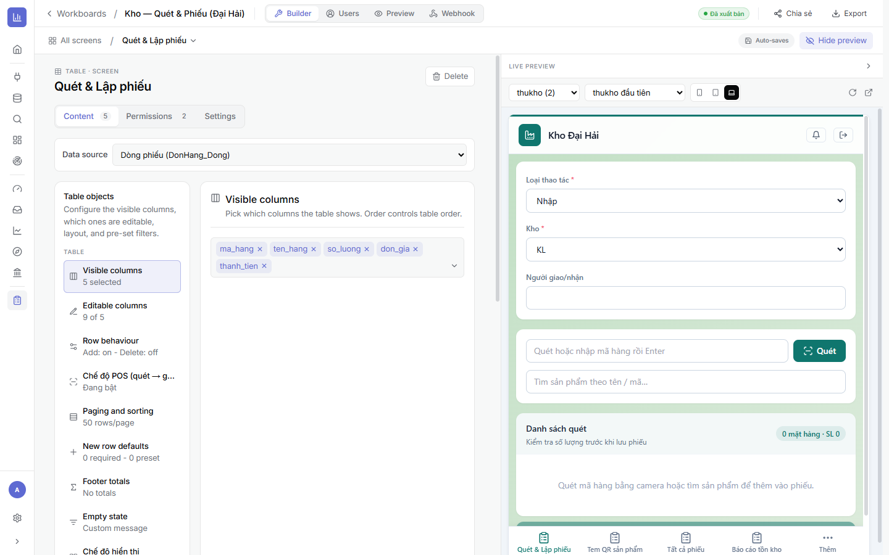

3.14 loại màn hình
Là gì: ở khu Thêm screen chọn một trong 4 loại:
- Form — nhập một bản ghi mỗi lần (phiếu nhập, đăng ký). Hợp cho nhập liệu tuần tự.
- Table — bảng nhiều dòng, có thể sửa trực tiếp từng ô, thêm/xoá hàng; hỗ trợ chế độ POS (quét mã → gom giỏ).
- Document — trang in A4 (phiếu kho, báo cáo in) dựng từ block.
- Dashboard — nhúng biểu đồ/KPI (đọc) ngay trong app.

3.2Cấu hình một screen
Là gì: bấm vào một screen để mở trình cấu hình. 3 tab: Content (nội dung), Permissions (quyền), Settings (thiết lập).
⚙ Cách làm (ví dụ screen Table)
- Data source — chọn bảng của dataset cho screen (ví dụ Dòng phiếu (DonHang_Dong)).
- Visible columns — chọn cột hiển thị & thứ tự.
- Editable columns — cột nào cho sửa (số còn lại chỉ đọc).
- Row behaviour — cho phép Thêm/Xoá hàng hay không.
- Chế độ POS — quét mã hàng → tự gom vào giỏ/phiếu (cho nghiệp vụ kho/bán hàng).
- Paging & sorting, New row defaults (giá trị mặc định), Footer totals, Empty state…

Trạng thái screen: “Configured” là xong; “Needs fields” nghĩa là chưa chọn cột/bảng — bổ sung để screen chạy được.
3.3Quyền & thiết lập theo screen
- Permissions (theo screen) — giới hạn ai xem/sửa screen này, kết hợp với App Users & RLS (Chương 4).
- Settings — tiêu đề, icon, hành vi hiển thị của screen.
- Kéo-thả để đổi thứ tự screen; thứ tự này là thứ tự tab dưới đáy app (thanh điều hướng).
Widget nâng cao trên Form/Table: ngoài ô nhập thường, còn có geopoint (bản đồ), ảnh/chữ ký, quét mã QR/barcode, cột tính toán, trạng thái — tuỳ nghiệp vụ hiện trường.
3.4Checklist
- ✅ Mỗi màn hình gắn đúng bảng; chọn cột hiện & cột sửa hợp lý.
- ✅ Bật Thêm/Xoá (và POS nếu cần) đúng nghiệp vụ.
- ✅ Không còn screen “Needs fields”; xem trước chạy đúng.
➡️ Tiếp theo: Chương 4 · App Users & RLS — cấp tài khoản đăng nhập & phân quyền dữ liệu.
🔗 Liên quan